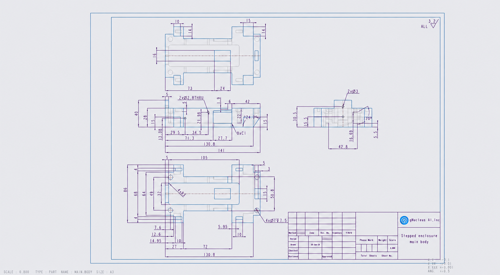
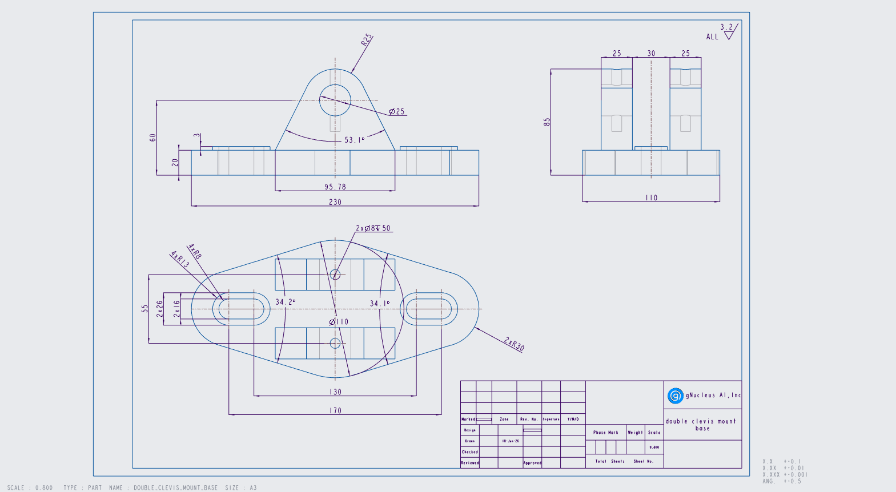

CAD Bench V3 · image-only pilot
Read the drawing. Build the part. Check the geometry.
3 drawings · 6 completed runs · one attempt per model and drawing. Select a score to inspect the model beside the reference.
| Drawing | Claude Opus 5.5High effort · FreeCAD MCP | GPT-6.1 Sol · CodexHigh effort · FreeCAD MCP |
|---|---|---|
 Forked mounting bracketfreecad-f32bdb2966 Forked mounting bracketfreecad-f32bdb2966 | >99.9%$0.68 · 4m 49sInspect comparison → | 47.3%$0.29 · 9m 28sInspect comparison → |
 Stepped enclosurefreecad-6b54209a13 | 61.5%$1.56 · 10m 05sInspect comparison → | 33.3%$0.48 · 17m 02sInspect comparison → |
 Double-clevis mountfreecad-f4e56c467a | 66.3%$0.33 · 3m 15sInspect comparison → | 71.0%$0.29 · 10m 54sInspect comparison → |
0% → 100% official score · red → green. Scores are not material-overlap percentages.
Useful reconstructions. Still needs an engineering check.
Both models produced editable CAD that looks close on these three drawings. The bracket and enclosure expose consequential mistakes in Codex’s openings and cuts. On the double-clevis mount, both solids overlap the reference by more than 99.8%, despite official scores of 66–71%: face-center scoring penalizes their different surface decompositions as well as geometric residuals.
Use this as a draft for inspection. These runs do not establish manufacturing readiness, fit, tolerance compliance, load capacity, or safe performance. A high visual overlap or a passed dimension check does not verify those properties. The stories show the evidence needed to review each draft.
Three drawings and one attempt per model cannot establish a dataset-wide winner or whether MCP helped. There is no baseline arm in this pilot.
Read the scoring method and cost accounting
The unchanged official score is the harmonic mean of geometry G and specification S: 2 × G × S / (G + S). Geometry includes scalar properties and a topology-dependent face-center alignment factor; scores are not percentages of correct material. Each comparison page expands the calculation using its recorded subscores.
Reported costs are API-equivalent token estimates; subscription charges are not measured. Elapsed time includes environment setup, generation, and grading. All runs used high effort and FreeCAD MCP; the agents were not given reference geometry or grader feedback.
Download results CSV · Download structured results
Stories are generated from frozen results and editable Markdown in stories/mcp-3-sol-v1. Rebuilding preserves your edits. Raw native trajectories and logs remain in jobs/.